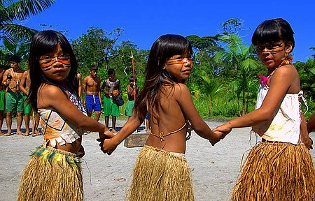
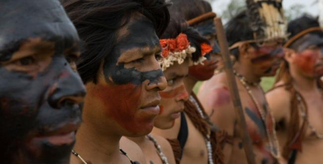

Os Guarani
Os Guarani são originários do tronco tupi-guarani e formam o maior povo nativo vivendo no Brasil. Eles vivem em regiões do Brasil, Bolívia, Paraguai e Argentina.
São divididos em diversos grupos com muitas semelhanças na cultura e organização sociopolítica, porém, que se diferem no modo de falar a língua, de praticar sua religião e também distintos no que diz respeito às tecnologias que aplicam em relação ao meio ambiente.

Por Renata Brito - Prefeitura de Bertioga
Figura que mostra meninas do povo Guarani.
Os grupos guarani que vivem no Brasil são:
Nome
Eles são conhecidos por vários nomes: Chiripá, Kainguá, Monteses, Apyteré, entre outros. Mas, se autodenominam como Avá que significa "pessoa", em Guarani.
Língua
A língua guarani faz parte do tronco tupi-guarani. Essa língua é bem difundida, pois os jesuítas aprenderam e escreveram uma gramática para ela. Além disso, é a língua indígena mais falada da América do Sul.
Habitantes Guarani
No Brasil existem cerca de 57 mil habitantes guarani, distribuídos nos estados do Mato Grosso do Sul, São Paulo, Paraná, Rio Grande do Sul, Rio de Janeiro, Espírito Santo, Pará, Santa Catarina e Tocantins.
Exploração e Reservas Indígenas Guarani
Todo período de colonização e pós colonização é marcado por uma sucessão de ataques aos indígenas guarani, e ainda, muitas de suas terras foram cedidas para lavoura, principalmente de soja e cana-de-açucar. Em grande parte deste tempo, os próprios índios trabalhavam nessas plantações.
Além disso, houve muitos tratos e distratos, pois parte das terras eram cedidas aos guarani e depois invadidas novamente.
Já na década de 80, os guarani e Kaiowá retomaram a posse de algumas de suas terras, principalmente na região de Mato Grosso do Sul.

Por João Carlos Figueiredo em Guarani Kaiowá
Figura que mostra homens do povo Guarani Kaiowá.